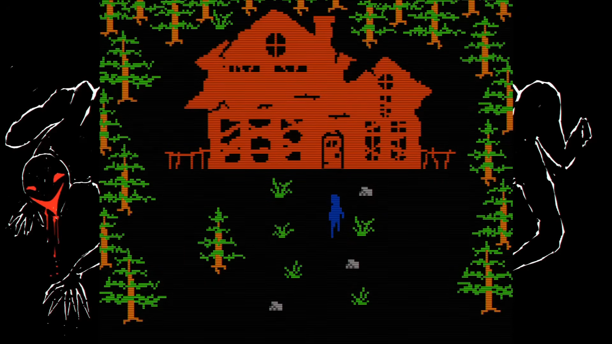
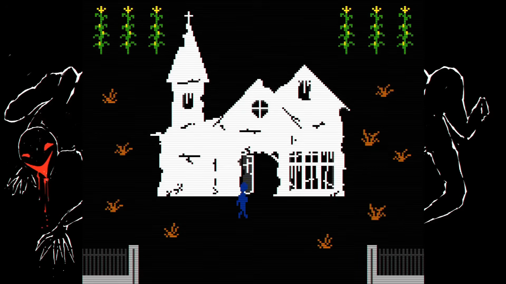
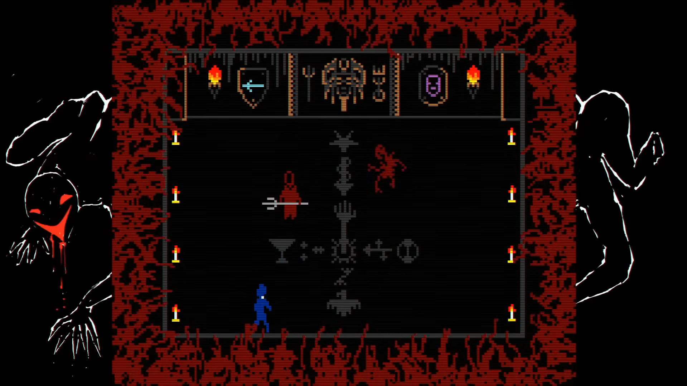

Sobre o jogo:
FAITH: The Unholy Trinity é um jogo de survival
horror com estética inspirada nos jogos antigos de computador.
O jogador assume o papel de John Ward, um jovem padre que retorna ao
local de um antigo exorcismo.
Depois de descobrir que os acontecimentos sobrenaturais daquele caso
estão longe de ter terminado, John precisa enfrentar demônios,
cultistas e forças sobrenaturais enquanto tenta compreender o que
realmente aconteceu. A história apresenta elementos de ocultismo,
possessões e exorcismos, construindo seu horror através de uma
estética deliberadamente limitada e perturbadora.
Imagens:


Gameplay e Trailer:
Trilha sonora:
- Nome da faixa: Abide with me.
- Número da faixa: 2.
- Nome da faixa: Moonlight Sonata No. 14, First Movement.
- Número da faixa: 3.
- Nome da faixa: Gnossienne 1.
- Número da faixa: 17.
Informações:
- Lançamento: 2022
- Desenvolvedora: Airdof Games
- Publicadora: New Blood Interactive